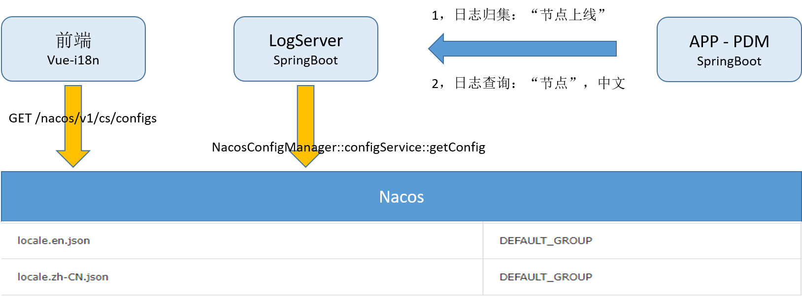
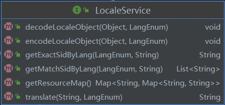
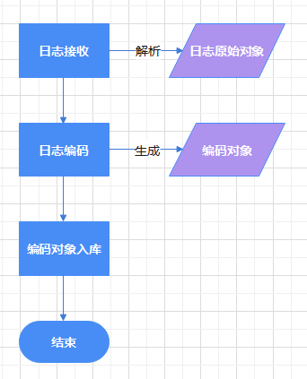
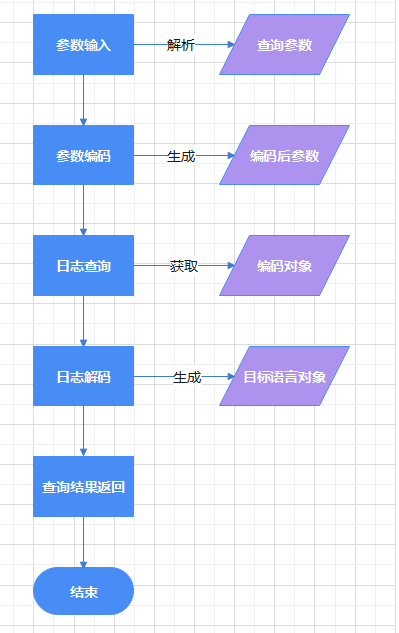

在上一篇文章中我们实现了基于vue-i18n的前端多语言方案，在这个方案中我们考虑了部分前后端交互中存在的问题如数据库菜单、代码直接返回错误信息等。在实现过程中我们发现如果只是将资源文件在前端工程管理，一些对多语言依赖较强的后端系统就无法正常工作，如日志中心。基于前后端通用的考虑，我们将资源文件作为配置项移动到Nacos进行维护，这篇文章会在这个前提下对基于vue-i18n的前端多语言方案进行系统改造。
方案实现

本方案以日志中心作为后端切入口，进行前后端适配多语言的验证。
前端vue-i18n中通过openAPI访问Nacos加载翻译资源文件，后端通过Nacos客户端加载资源，并提供用于翻译的辅助方法。下面我们分别从前端资源加载、日志入库和日志查询三个方面详细介绍方案实现细节。
资源加载
前端vue-i18n需要在初始化的时候，调用openAPI从Nacos加载翻译资源文件。主要通过两个js实现，
nacos.js
nacos.js实现通过openAPI访问Nacos的功能，实现通过语言加载资源的功能，代码如下：
1
2
3
4
5
6
7
8
9
10
11
12
13
| const serverAddr = '/i18n'
export async function getI18nResource(locale) {
return await request({
url: serverAddr + '/nacos/v1/cs/configs',
method: 'get',
params: {
tenant: 'local',
dataId: 'locale.' + locale + '.json',
group: 'DEFAULT_GROUP'
}
})
}
|
这里定义了serverAddr为服务前缀，通过nginx配置转发到Nacos Server以解决跨域问题。
main.js
main.js中调用nacos.js定义的方法，加载资源并添加到全局i18n对象。
1
2
3
4
5
6
7
8
9
10
11
12
13
14
15
16
17
18
19
20
| import i18n from '@/common/lang/i18n'
import { getI18nResource } from '@/common/utils/nacos.js'
const lang = ['en', 'zh-CN']
const langPromises = lang.map(function (l) {
return getI18nResource(l)
})
Promise.all(langPromises).then(function (message) {
message.map(function (m, i) {
i18n.mergeLocaleMessage(lang[i], m)
})
new Vue({
el: '#app',
router,
i18n,
store,
render: (h) => h(App)
})
})
|
后端适配
后端通过LocaleService封装翻译相关的方法，提供Nacos语言包的适配。

getResourceMap
加载全局资源到内存，同时将Nacos中储存的级联map格式转换为简单的flat map格式
getExactSidByLang
通过语言和内容精确查找翻译的SID，查找基于加载的ResourceMap
getMatchSidByLang
通过语言和内容模糊查找翻译的SID，查找基于加载的ResourceMap
translate
通过SID和语言翻译成对应的内容，查找基于加载的ResourceMap
encodeLocaleObject
将原始对象进行编码，主要将需要编码的字段转换为SID
decodeLocaleObject
将编码对象进行解码，主要讲需要解码的字段翻译为原始内容
在上述方法中，对于encode和decode的过程，我们引入了一个注解@i18n标注需要编码和解码的字段。
1
2
3
4
5
6
7
8
| public class TestObject {
String name;
@I18n
String val1;
@I18n
String val2;
}
|
encode和decode的原理都是直接使用反射进行取值、翻译和赋值的过程。
1
2
3
4
5
6
7
8
9
10
| List<Field> fieldList = FieldUtils.getFieldsListWithAnnotation(o.getClass(), I18n.class);
for(Field f : fieldList){
Object val = FieldUtils.readField(f,o, true);
if( val != null && val instanceof String ){
String strValue = val.toString();
String finalValue = this.getExactSidByLang(lang, strValue);
if(StringUtils.isNotBlank(finalValue)) FieldUtils.writeField(f,o,finalValue,true);
}
}
|
场景验证
在日志的使用场景中主要分为日志入库和日志查询，
日志入库

日志接收后解析为日志原始对象，经过日志编码调用 encodeLocaleObject 方法，将加了@i18n注解的字段进行编码后生成编码对象，编码的时候默认客户端发送的日志都是中文，按照中文进行编码。
得到编码对象后调用ES客户端将编码对象写入ES。
日志查询

用户在发起日志查询的时候需要输入目标语言和查询条件。
日志查询请求首先根据参数注解进行编码，然后依据编码后的参数进行日志查询。查询得到编码的对象后需要根据注解调用 decodeLocaleObject 方法进行解码，解码的时候使用用户输入的目标语言，最终生成了目标语言对象。这时候将目标语言对象返回就是用户的查询结果了。
方案回顾
我们在基于前端的多语言方案中引入了Nacos作为配置中心存放语言资源文件，实现了前后端的多语言可用。
前端在初始化vue实例的时候动态获取Nacos的资源包，注入到i18n对象中实现多语言的支持；后端实现的时候通过注解结合反射的方式，基于对象进行多语言的编解码，对实现细节实现封装简化了开发难度。
此外引入了语言枚举类，来提高多语言接口的容错能力。
1
2
3
4
5
6
7
8
9
10
11
12
13
14
15
16
17
18
19
20
21
22
23
24
25
26
27
28
29
| public enum LangEnum{
en("en","en"),
cn("zh-CN","zh,cn,zh-cn");
String lang;
String potential;
LangEnum(String l, String p){
lang = l;
potential = p;
}
public String getLang() {
return lang;
}
public String getPotential() {
return potential;
}
}
public static LangEnum getLangEnum(String input){
if(StringUtils.isBlank(input)) return LangEnum.cn;
String upperInput = input.toUpperCase();
for(LangEnum lang : LangEnum.values()){
if(Arrays.stream(lang.getPotential().split(","))
.anyMatch(p-> p.toUpperCase().contains(upperInput)))
return lang;
}
return LangEnum.cn;
}
|